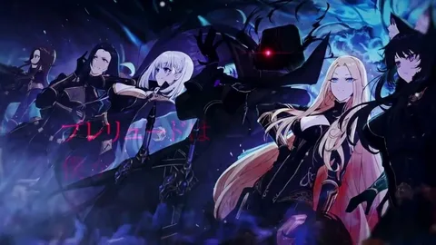

Кратко о нём: Землю захлестнула эпидемия нового вируса, который убивает всех старше 13 лет. А позже пришли вампиры, которые подчинили себе человечество. Сирота Юитиро в детстве настрадался от новых «хозяев», которые обращались с ним как с животным. Но теперь парень вырос, и у него одна цель — уничтожить всех кровососов

Кратко о нём Восхождение в тени! (сериал 2022 – ...). Kage no Jitsuryokusha ni Naritakute! 2022 (1 сезон) 24 мин. В современной Японии обычный школьник мечтает стать героем и спасать всех, оставаясь в тени, но попадает под грузовик и умирает. После чего он рождается в новом мире под именем Сид Кагэно, где обнаруживает, что в мире есть магия, которая бы помогла бы ему осуществить свою мечту из предыдущей жизни.